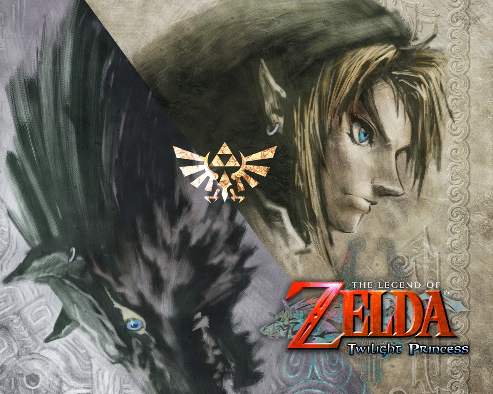
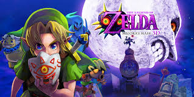
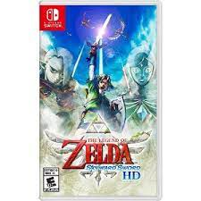

The Legend Of Zelda is a Nintendo exclusive game series based on the adventures of Link.
Zelda is the name of the princess that link saves in each game ( however this has changed in the newest game echoes of wisdom
where the roles are reversed.)
1. Breath Of The Wild
The Legend Of Zelda: Breath of The Wild is a compelling story, which touches on the concept of love, loss
,acceptence and the fear of being forgotten. Not only does it have one of the best storylines, the game is
open-world,allowing you to explore at your own pace. The game allows you to find things out for yourself, while still
providing tips to guide you through the vast terrain. The scenery is beautiful and the music adds to the atmosphere,blending
in seamlessly, while creating a unique way of conveying emotions.
2.Ocarina Of Time
The Legend Of Zelda: ocarina Of Time is one of the first 3d Zelda games. It set the bar for future games with its detailed
world building and characters. The game quickly became know for it's unique style and story. Music played a big part
in it's dungeons and fight scenes. The world is built with fun and exciting side quests that never leave you bored.
3. Twilight Princess

The Legend Of zelda: Twilight Princess is a one of zelda's more darker games. It's world is dark and barron,covered by a
glimpse of twilight. The game touches on the feeling of loosing a friend, and the consequences of scarifce. The music is intense and
and loud, which allows the game to have such a dark atmosphere. There are many scences that will leave the player shocked. The game finishes with
a plot twist that not many expect.
4. Majora's Mask

The Legend Of zelda: Majora's Mask is arguably the darkest zelda game, with themes of death, betrayl and impending doom,it is perfect
for those who like darker games. Majora's Mask is intense, with one wrong move, Termina will be in ruins,with you to blame.
The world is in ruins as you help people struggling with accepting their fate.
5. Skyward Sword

The Legend Of Zelda: Skyward Sword is known for it's unique setting. Your main source of transport is by bird, and
although the controls may be annoying to get used to, the game itself is a fun, and thrilling adventure. The ending sets up the
entire zelda timeline,and without this game, zelda wouldnt be what it is today. Unlike other zelda games, skyward sword doesnt feel as lonely
, due to the fun and unique characters you meet along the way.